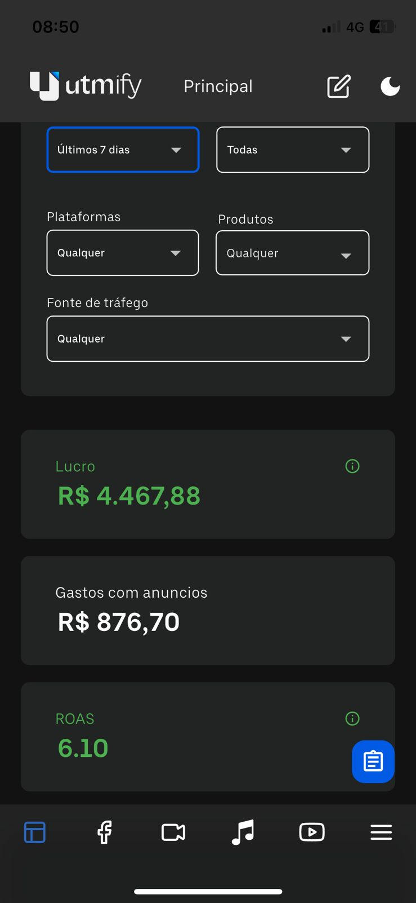
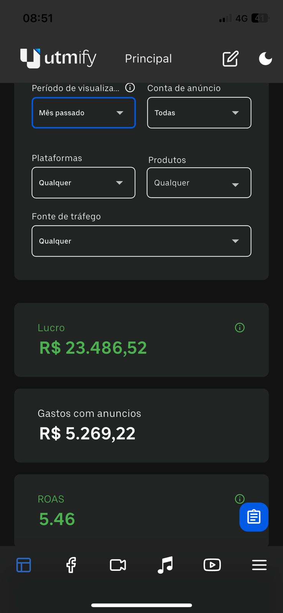
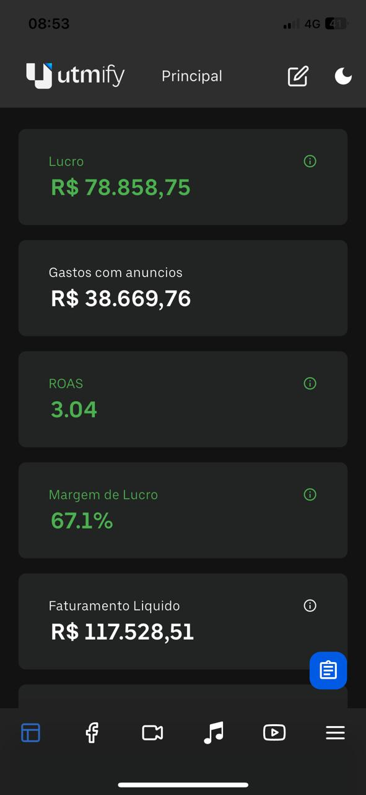

🩺 Anamnese Digital Gratuita
Você é referência no consultório.
Mas e no digital?
Responda 9 perguntas rápidas e descubra exatamente o que está impedindo você de atrair mais pacientes pelo Instagram.
Responda 9 perguntas rápidas e descubra exatamente o que está impedindo você de atrair mais pacientes pelo Instagram.
Para liberar seu diagnóstico personalizado, preencha os dados abaixo.
Gerando sua Anamnese Digital personalizada
Baseado nas suas respostas
Resultado da Anamnese Digital
O Diagnóstico 360 vai além do quiz — é uma imersão real e individual no seu caso, com especialistas que conhecem o mercado de saúde.
30 dias de Acompanhamento · Sem Contrato
Fale com nossa equipe agora. Leva menos de 1 minuto e nossa equipe responde em até 24h.
Primeira conversa para entender seu caso, nicho, objetivos e funil atual em detalhes.
Em até 30 dias, análise completa e plano de ação concreto nas suas mãos — pronto para executar.
Não. O diagnóstico é eficaz independente do tamanho do perfil. Muitos profissionais que nos procuram estão na fase de construção e precisam exatamente de uma base estratégica sólida para crescer com consistência.
100% personalizado. Tudo começa com uma reunião estratégica onde nossa equipe entende seu nicho, sua audiência, seus produtos e sua realidade. O diagnóstico e o plano de ação são construídos especificamente para você — não existe template genérico.
O Diagnóstico 360 tem duração total de 30 dias — incluindo análise interna, entrega da apresentação em PDF e acompanhamento via WhatsApp para execução do plano de ação.
Resultados reais de profissionais de saúde


Cases reais de crescimento e performance




